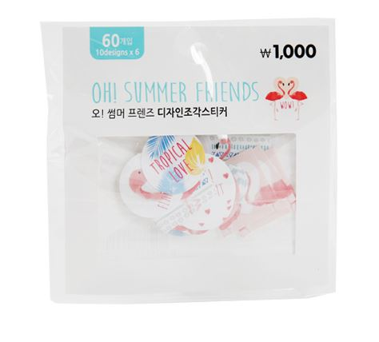
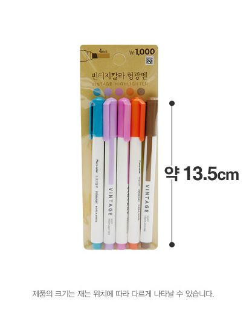
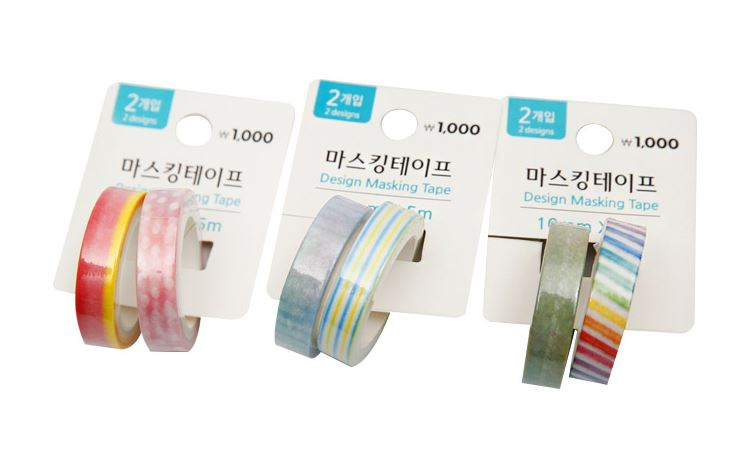
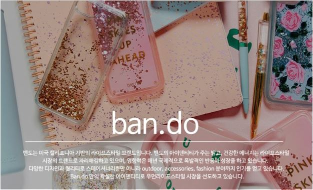
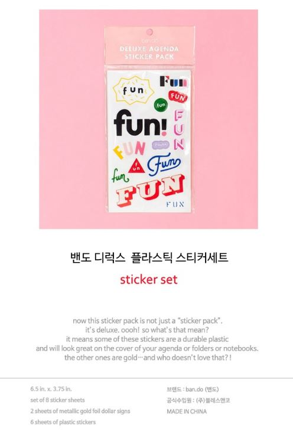
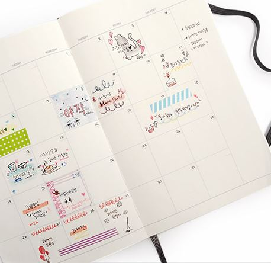
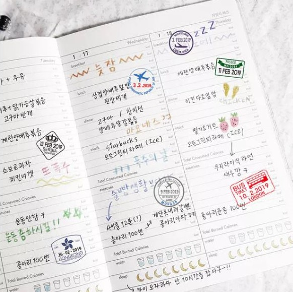
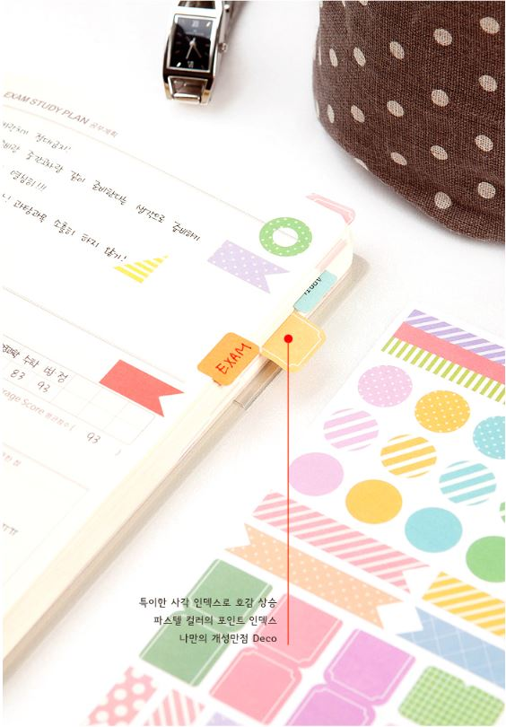

처음 다이어리를 꾸며보는 사람에게 필요한 여러 디자인 문구로 구성된 패키지입니다. 어렵다고 생각했던 다이어리 꾸미기에 조금 더 쉽게 다가가기 위해 기본적인 재료들로 구성되어있습니다.
스티커4종 + 마스킹테이프2종 + 형광펜
다이소 조각스티커 1000원
(테마별로 여러 종류)
다이소 빈티지칼라 형광펜 1000원
다이소 마스킹테이프 1000원
가격 1000*4 + 1000*2 + 1000 = 7000
구성품을 한눈에 볼 수 있도록 전체샷을 제공
 구성품의 상세 설명 기제
다이어리 꾸미기를 장려하는 것이 목표이기 때문에 너무 특이한 재료는 접근성을 떨어뜨릴 수 있다고 생각하여, 오히려 주변에서 쉽게 구할 수 있는 제품 위주로 구성하였습니다. 다이소나 근처 문구점에서 쉽게 찾아볼 수 있는 제품들로 구성되어 있어 재료가 소진되어도 꾸미는 것에 필요한 재료들을 주변에서 쉽게 떠올릴 수 있도록 하였습니다.
1. 해당 재료들로 꾸며진 예시 사진
 2. 패키지를 구성하는 재료에 대한 설명
